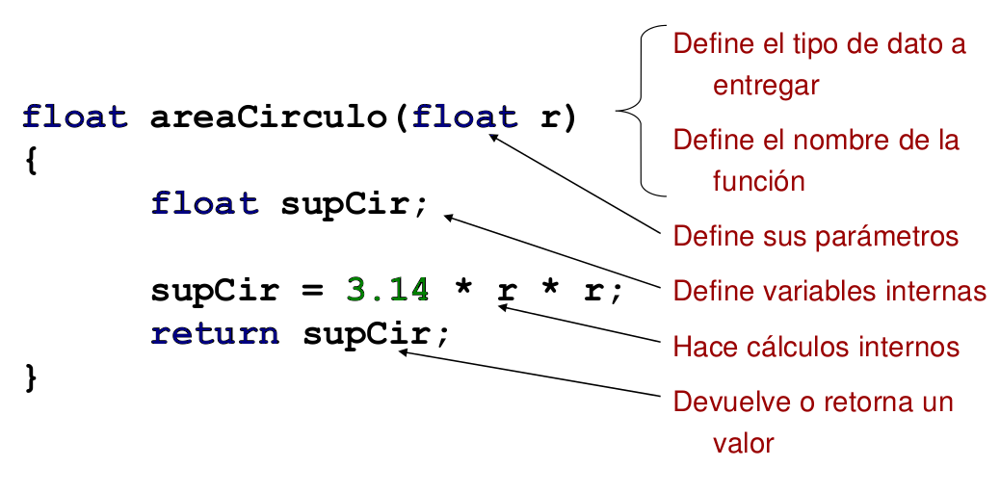

Sabemos programar...
¿Y ahora que?
Temas que siguen...
- Programación estructurada... ¿Como dividimos en sub-sistemas?
- !Funciones!
- Tipos de datos en C... ¿Eso es todo o hay tipos de datos compuestos? ¿Se puede hacer agrupaciones de datos?
- Estructuras de datos en C
- Vectores, Matrices
- Strings
Diferentes standards de codificación
Funciones
¿Para que sirven las funciones?
- No repetir varias veces el mismo código
- Ordenar el código jerárquicamente (Top Down)
- Facilitar la comprensión del código
- Distribuir o separar el trabajo entre programadores
- Realizar trabajos más complejos descompuestos en partes mas simples
- Generan modularidad: Sólo se conoce la forma de llamarlas (interfaces) y no interesa cómo operan por dentro.
¿Usamos funciones ya?
- Funciones usadas hasta aquí:
- main()
- printf() & scanf()
- sqrt()
- ¿Como las incluimos?
- #include
- ¡Las librerias tienen funciones dentro!
Uso de funciones (I)
- Razones para crear una función:
- Reducir la complejidad del programa ("divide y vencerás")
- Eliminar código duplicado
- Limitar los efectos de los cambios (aislar aspectos concretos)
- Ocultar detalles de implementación (por ejemplo en algoritmos complejos)
Uso de funciones (II)
- (mas) razones para crear una función:
- Promover la reutilización de código (p.ej. familias de productos, bibliotecas de funciones)
- Mejorar la legibilidad del código
- Facilitar la portabilidad del código
- Crear bibliotecas
Características de las funciones (I)
- Un programa esta formado por funciones
- En C no se pueden definir funciones anidadas
- Si se puede hacer anidamiento de llamadas
- Está permitida la recursividad (llamarse a si misma)
Características de las funciones (II)
- Desde una función se puede llamar a cualquier otra
- Si no se indica otro tipo, las funciones son de tipo "int" por defecto
- El mecanismo de pasaje de parámetros es por valor
- Siempre devuelven un valor (puede ser void)
Características de las funciones (III)
- La función "main()":
- Todo programa debe contener una función llamada "main()"
- Es el punto de inicio, es la función por cual comienza la ejecución del programa, es invocada (llamada) desde el sistema operativo (SO) cuando se ejecuta el programa
- También devuelve un valor al medio de llamada (SO)
Definiendo funciones (I)
- Definir el problema que la función debe resolver y dar un nombre significativo (y no ambiguo) a la función
- Establecer cómo se puede probar el funcionamiento correcto de la función
- Declaración:
- Escribir la declaración de la función establece el tipo de la devolución y los tipos y parámetros que recibe (cabecera de la función)
Definiendo funciones (II)
- Implementado la función:
- Determinar el algoritmo más adecuado para resolver el problema
- Describir los pasos principales del algoritmo como comentarios
- Rellenar el código correspondiente luego de cada comentario
- Determinar como verificar el correcto funcionamiento
Ejemplo Función
- Calcule el área de un circulo
- Escribir una función a la cual se le envíe el valor del radio y calcule y devuelva el valor del área del circulo, la función trabaja con tipo float
Partes Función
Cómo se invoca (usa) una función
- Puede ser llamada desde cualquier parte del programa, luego de ser definida.
- Por esa razón a veces las funciones se declaran y definen al principio del programa (antes del main)
Ejemplo de llamada a función (invocación):
#include <stdio.h>
void main(void)
{
float area, radio = 2;
area = areaCirculo(radio);
printf("area de circulo de radio %f = %f\n", radio, area);
}
Otra forma de invocar una función
- Mientras hayan sido declaradas previamente las funciones pueden invocarse desde cualquier lado, incluso dentro de un llamado a otra función.
Ejemplo de invocación dentro de un llamado:
#include <stdio.h>
void main(void)
{
printf("area de circulo de radio 2 = %f\n", areaCirculo(2));
}
Donde pongo la función (I)
Opción 1: Función al principio del archivo
- Si pongo todo dentro del mismo archivo, puedo poner primero la implementación y luego el main()
- De esta manera C ya conoce a la función y no necesita la declaración del prototipo.
- Igual cabe aclarar que es mas correcto/ordernado dividir los funciones y librerías en archivos distintos.
Donde pongo la función (I)
Opc1: Función antes de main()
#include <stdio.h>
float areaCirculo(float r)
{
float supCir;
supCir = 3.14 * r * r;
return supCir;
}
void main(void)
{
float area, radio = 2;
area = areaCirculo(radio);
printf("area de circulo de radio %f = %f\n", radio, area);
}
Donde pongo la función (II)
Opción 2: Función luego del main
- También ponemos todo dentro en un mismo archivo, pero...
- Como la implementación esta después debo agregar el prototipo
- En la versión anterior, como está antes, me "ahorro" la declaración del prototipo
Donde pongo la función (II)
Opc2: Función después de main()
#include <stdio.h>
float areaCirculo(float);
void main(void)
{
printf("area de circulo de radio 2 = %f\n", areaCirculo(2));
}
float areaCirculo(float r)
{
float supCir;
supCir = 3.14 * r * r;
return supCir;
}
División de Archivos (I)
milib.h
float areaCirculo(float);
milib.c
float areaCirculo(float r)
{
float supCir;
supCir = 3.14 * r * r;
return supCir;
}
División de Archivos (II)
miprog.c
#include <stdio.h>
#include "milib.h"
void main(void)
{
float area, radio = 2;
area = areaCirculo(radio);
printf("area de circulo de radio %f = %f\n", radio, area);
}
División de Archivos (III)
¿Como compilamos esto?
gcc -o supcirc miprog.c milib.c
Ejercicio:
Hacer un programa que invocando una función permita ingresar un valor en fareheit, calcule su equivalente en Celcius.
Pasaje:
- F = 9.0/5 * C + 32
- C = (F - 32) * 5.0/9
Realizar el programa y las funciones en archivos separados.
Nota: 9.0 y 5.0 fuerzan la división flotante (explicado a continuación).
Aritmética de flotantes en C (I)
#include <stdio.h>
void main(void)
{
float c;
c = 5 / 9;
printf("c = %f",c); /* Esto retorna 0 */
}
Nota: Como 5 y 9 son enteros, C usa división entera y el resultado de esto es 0.
Aritmética de flotantes en C (II)
#include <stdio.h>
void main(void)
{
float c;
c = 5.0 / 9;
printf("c = %f",c); /* Esto retorna 0.555556 */
}
Nota: Como 5.0 es un flotante, antes de hacer el cálculo se convierte 9 a flotante y C usa división flotante.
Variables: Alcance
- Reglas de alcance:
- Variables locales: Solo pueden accederse dentro de la función (o bloque) donde fueron declaradas. No mantienen su valor entre llamados.
- Variables globales: Se pueden acceder desde cualquier parte del programa o función y el valor es único para todo el programa.
¿Variables locales o globales?
- Las variables locales:
- Mejoran la portabilidad de las funciones
- Dan mas independencia a la función y refuerzan el concepto de programación estructurada.
- ¡En informática 1 siempre usaremos variables locales!
- ¿Excepciones en otras materias? ¡Si, sistemas embebidos!
Variables: Tipo de almacenamiento (I)
- Clases de Almacenamiento:
- Externas (extern): Da visibilidad a variables declaradas en otros módulos/archivos y compiladas separadamente. El enlace lo resuelve el linker, no el compilador.
- Registros (register): Se le hace explicito al compilador que la variable se usará muy frecuentemente. Es una sugerencia, por lo tanto si es posible el compilador alojará la variable en registros del procesador en lugar de la memoria principal. Un ejemplo donde es útil usar este modificador es para variables de iteración en ciclos for.
Variables: Tipo de almacenamiento (II)
- Clases de Almacenamiento:
- Estáticas (static) - Se inicializan una sola vez y conservan su valor entre llamadas a la misma función.
- Volatiles (volatile) - Le informa al compilador que:
- La variable puede ser modificada de forma externa al flujo del programa
- No debe aplicar optimizaciones a la variable cuando el programa sea compilado
Convención de llamado a funciones en el lenguaje C
- Pasaje de variables en el stack
- Variables locales en el stack

Reglas de alcance y visibilidad
- Las variables sólo son conocidas dentro del bloque en que han sido declarados y en los bloques anidados internos a estos (objetos o variables locales)
- Las declaraciones van al principio de cualquier bloque (sentencias encerradas entre { y })
- Las variables declaradas fuera de todo bloque o función son globales (y valen dentro del módulo)
Ejemplos de código:
Ejercicio:
- Realizar un programa que implemente una calculadora:
- Realizar funciones que puedan hacer las cuatro operaciones básicas: +, -, * y /
- Debe poder trabajar en decimal, hexadecimal y octal.
- Prmero preguntar la base a usar, luego los 2 números y finalmente el cálculo a realizar.
- El resultado se va a mostrar en la misma base en que se ingresaron.
Recordar que para printf/scanf:
- %o es octal
- %x es hexadecimal
- binario lo dejamos para después...